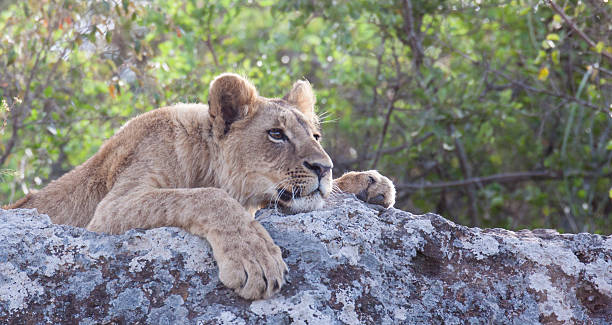
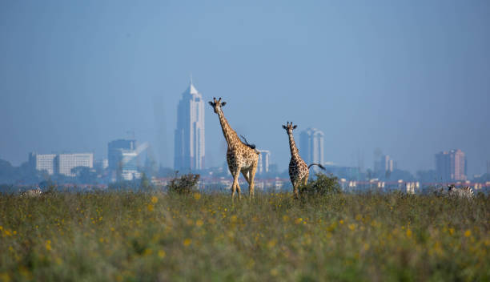
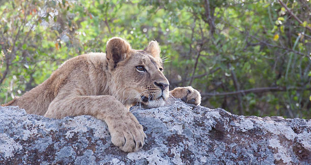
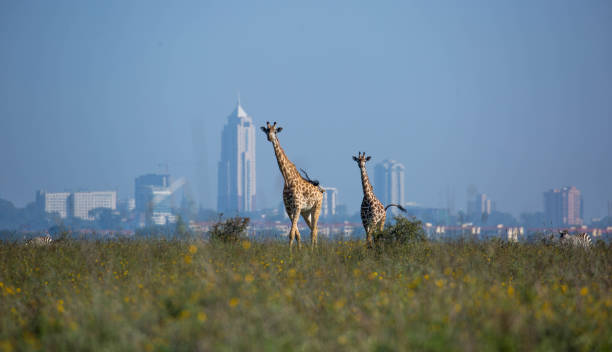

Nairobi National Park is a national park in Kenya that was established in 1946 about 7km (4.3 mi) south of Nairobi. It is fenced on three sides, whereas the open southern boundary allows migrating wildlife to move between the park and the adjacent Kitengela plains. Herbivores gather in the park during the dry season. Despite its proximity to the city and its relative small size, it boasts a large and varied wildlife population, and is one of Kenya's most successful rhinoceros sanctuaries.
The park has a large and diverse wildlife population. Species found in the park include lion, leopard, African buffalo, black rhinoceros, giraffe, hippopotamus, spotted hyena, blue wildebeest, plains zebra, cheetah, Thomson's gazelle, Grant's gazelle, common eland, impala, hartebeest, waterbuck, common warthog, olive baboon, black-backed jackal, common ostrich, and Nile crocodile.
Herbivores, including wildebeest and zebra, use the Kitengela conservation area and migration corridor to the south of the park to reach the Athi-Kapiti plains. They disperse over the plains in the wet season and return to the park in the dry season. The concentration of wildlife in the park is greatest in the dry season, when areas outside the park have dried up. Small dams built along the Mbagathi River give the park more water resources than these outside areas. They attract water dependent herbivores during the dry season.
The park is the northern limit for wildlife migrations in the dry season.The park has a high diversity of bird species, with up to 500 permanent and migratory species in the park. Dams have created a man-made habitat for birds and aquatic species.